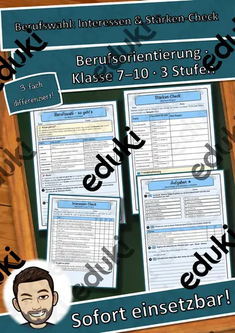

Der Flughafen – Lesespurgeschichte mit Rätselaufgaben (Klasse 8)
Begib dich mit deiner Klasse auf eine spannende Lesespur durch einen großen Flughafen! Die Kinder begleiten Lena und Jonas und die Praktikantin Jana – von der Abflughalle über Check-in, Sicherheitskontrolle, Gepäckabfertigung, Gate, Tower und Wartungshalle bis zur Startbahn – und lernen dabei ganz nebenbei, wie eine Flugreise abläuft und wie ein Flughafen als Verkehrsknoten arbeitet. Am Ende jedes Abschnitts verrät ein Hinweis den nächsten Ort auf dem Flughafenplan – nur wer richtig liest und mitdenkt, findet den Weg und sammelt alle geheimen Buchstaben zum Lösungswort.
Diese Lesespurgeschichte verbindet motivierendes, sinnentnehmendes Lesen mit echter erdkundlicher Kompetenz und schult zugleich das genaue Arbeiten. Das Material ist SOFORT EINSETZBAR und in DREI DIFFERENZIERUNGSSTUFEN (leicht ★ / mittel ★★ / schwer ★★★) angelegt, sodass alle Kinder einer Klasse am selben Thema arbeiten können.WICHTIG: Das komplette Material ist sowohl in FARBE als auch in SCHWARZ-WEISS enthalten – ideal zum Sparen von Druckkosten.DAS IST ENTHALTEN
- Lesespurgeschichte in 3 Niveaus (leicht, mittel, schwer)
- farbiger Flughafenplan als Suchkarte
- Hörverstehen mit QR-Code zur MP3 (Kinder hören selbstständig mit Kopfhörern)
- vier Aufträge auf dem Weg: ein Verbinde-Rätsel, ein Flughafen-Quiz, eine Prozent-Rechenaufgabe und ein Steckbrief
- Rätselseite (Wörter-Suchsel + Wissensfragen)
- Ausmalbild zum Thema (Flughafen-Szene)
- ausführliches Lösungsblatt für die Lehrkraft
- alles zusätzlich als komplette Schwarz-Weiß-VarianteSO FUNKTIONIERT DIE LESESPURDie Kinder lesen ab START, entnehmen dem Text einen Hinweis auf einen Ort, suchen ihn auf dem Plan und lesen beim dort abgebildeten Buchstaben weiter. Eingebaute Sackgassen dienen der Selbstkontrolle. Am Ende werden die gesammelten Buchstaben umgestellt und ergeben ein geheimes Lösungswort. (Die Lösungen sind selbstverständlich nur im Lösungsblatt für die Lehrkraft enthalten.)INHALTLICHER SCHWERPUNKTDer Flughafen als Verkehrsknoten und der Ablauf einer Flugreise: Abflughalle und Check-in, Sicherheitskontrolle, Gepäckabfertigung, Gate und Boarding, die Flugsicherung im Tower, die Wartung der Flugzeuge im Hangar sowie Start und Landung. Ein Blick gilt der Bedeutung des Luftverkehrs für Mobilität, Handel und Tourismus. Das Material stellt die Zusammenhänge sachlich und faktenbasiert dar (ohne Markennamen oder Airline-Logos).ABGEDECKTER LEHRPLAN (Klasse 8)
- Erdkunde / Geographie: der Flughafen als Verkehrsknoten, Luftverkehr und Mobilität, Verkehrswege im Vergleich, Bedeutung für Handel, Tourismus und Globalisierung.
- Deutsch – Lesen mit Texten und Medien umgehen: Lesestrategien anwenden, Texten gezielt Informationen entnehmen, sinnentnehmend und selektiv lesen; Selbstkontrolle und Lesemotivation durch die Lesespur; Zuhören: einem Sachhörtext konzentriert folgen und Wesentliches entnehmen (Hörverstehen mit MP3).
- Mathematik – Prozentrechnung im Sachzusammenhang (Zahlen vom Flughafen), Prozentwert berechnen und Ergebnisse deuten.
- Fächerübergreifend / Kompetenzen: räumliches Verständnis, Ablauf- und Systemdenken, selbstständiges Arbeiten, genaues Lesen und Prüfen, Konzentration und Ausdauer, kreatives Gestalten (Ausmalbild).
Geeignet für Freiarbeit, Stationenlernen, Vertretungsstunden, Wochenplan und Homeschooling. Klassenstufe 8 (differenziert einsetzbar auch in angrenzenden Jahrgangsstufen).
Ähnliche Materialien

Flughafen Lückentext mit Wortspeicher Hörverstehen und Suchsel

Golden Gate Bridge Lückentext mit Wortspeicher Hörverstehen und Suchsel

Tower Bridge – Hörverstehen mit Lückentext (interaktiv)

Tower of London Lückentext mit Wortspeicher Hörverstehen und Suchsel

Tower Bridge Lückentext mit Wortspeicher Hörverstehen und Suchsel

Das Flugzeug – Lesespurgeschichte mit Rätselaufgaben (Klasse 8)

Berufswahl: Interessen & Stärken-Check – Bewerbung & Praktikum, 3 Stufen, mit Hilfen & Lösungen (Klasse 7–10)